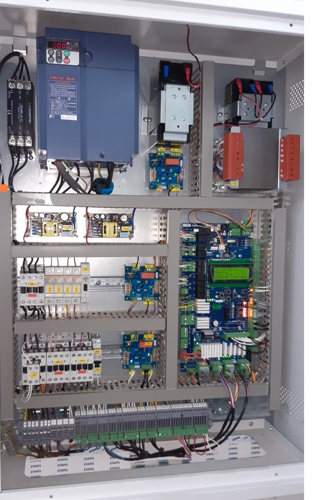

| LED | Circuito Correspondente / Estado de Monitorização |
|---|---|
| IN28 | Controlo da Linha de Segurança — Ponto 1. Monitorização do estágio inicial (Fins de curso, paraquedas, cabos). |
| IN27 | Controlo da Linha de Segurança — Ponto 2. Estado após o Limitador de Velocidade (LV). |
| IN26 | Controlo da Linha de Segurança — Ponto 3. Validação da continuidade após a Roda Tensora. |
| IN25 | Controlo da Linha de Segurança — Ponto 4. Monitorização após o Stop de Poço. |
| IN24 | Controlo da Linha de Segurança — Ponto 5. Validação da linha pós-revisão/emergência manual antes das portas. |
• Fazer SHUNT temporário apenas para diagnóstico entre os bornes de teste respetivos.
• ATENÇÃO: Nunca deixar shunts permanentes nos circuitos de encravamento (6-7, 7-8 ou 8-9) em modo normal.
• No caso de ausência de botoneira de emergência externa, validar a continuidade direta entre os bornes 5A e 6.
| Circuito / Componente | Bornes de Medição |
|---|---|
| Fins de curso superior/inferior; Páraquedas; Alongamento de cabos | 1 a 2 |
| Limitador de velocidade (LV) | 2 a 2A |
| Roda tensora | 2A a 2B |
| Stop de poço | 2B a 5A |
| Stop de revisão / Botoneira de emergência | 5A a 6 |
| Fecho das portas de piso (Encosto) | 6 a 7 |
| Encravamento das portas de cabine; Stop de cabine | 7 a 8 |
| Encravamento das portas de piso (Trincos) | 8 a 9 |